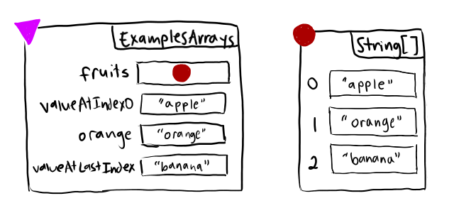

9.1 — Intro to Arrays
We've seen how we can use classes to represent compound data – Points for pairs of numbers, Regions that aggregated Point and size information, Books with authors and titles and prices, and so on.
There is another important kind of compound data in computing – a collection. A class could be used to represent, say, a single student in a class roster. But the class roster itself is a collection of students, which isn't something we've seen how to represent so far.
There are several ways to represent collections of data in Java. We will start with one called an Array, but we will explore others.
The most direct way to create a collection using arrays is to use an array initialization statement. This is written as a variable or field definition with a type that has [] at the end, with comma-separated values in between curly braces as the value. Here’s one for a collection of names of fruit:
String[] fruits = {"apple", "orange", "banana"};Just like with other field definitions, we could put this into an examples class, for example:
If we run this, we see some new output that shows the array shape.
Do Now! Fill in the blanks based on what you see when running the program.
Here's the output we saw:
new ExamplesArrays:1(
this.fruits = new java.lang.String[3]:2{
[0] "apple",
[1] "orange",
[2] "banana"
}
this.valueAtIndex0 = "apple"
this.orange = "orange"
this.valueAtLastIndex = "banana")The new java.lang.String[3](){ printout is how the tester library prints array values; 3 indicates the length. The values are printed in order with the corresponding index next to each.
Arrays and Memory
Just like objects, arrays have their contents stored in memory. Just like objects, each array has a reference (the :2 in the output above).
We can draw them in a memory diagram, just like we can draw objects:

Array Indexing
In addition, we also saw array index expressions or array lookup expressions, which looked like this.fruits[0]. Much like the characters in a String, we refer to the contents of arrays by their index. The first element is at index 0, the second at index 1, and so on.
The expression before the open bracket [ can be any expression that evaluates to an array (like this.fruits), and the index can be any expression that evaluates to an int. For example, in the array lookup expression this.fruits[this.fruits.length - 1], the index is the expression this.fruits.length - 1, which evaluates to 2.
This also demonstrates the length field of arrays, which holds the number of elements in the array.
Arrays can also contain values other than Strings. For example, they can contain int or double values:
//code with blanks, for reference
int num40 = _____BLANK1_____;
double num9p5 = ____BLANK2_____;Assume that this program, with the blanks filled in, should produce this output:
new ExamplesNumberArrays:1(
this.someNumbers = new int[3]:2{
[0] 40,
[1] 50,
[2] 60
}
this.someMoreNumbers = new double[4]:3{
[0] 100.5,
[1] 0.3,
[2] 9.5,
[3] 4.4
}
this.num40 = 40
this.num9p5 = 9.5)Do Now! What array index expressions can we put into the blanks to produce this output?
Summary
- One way that we can represent a collection of data in Java is by using an Array.
- An array initialization statement includes a type with
[]after it, and the name of the variable or field that will store a reference to the array. The right-hand side of the equals sign should have curly brackets with a list of values separated by commas inside it. - Arrays, just like objects, are stored in memory, and the variables and fields will store their references.
- We can access an element in an array by using an array index expression. To do this, we will need the name of a variable or field that stores a reference to the array and the index we want to access.